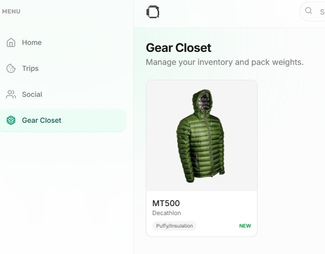

I'm a software engineering student at Concordia University
in Montréal. I like building useful things, running long distances,
and finding a reason to get outside.
This is a slightly less formal version of my résumé. A few places
I've worked, things I've made, and the bits in between.
I’ve become very familiar with Apache Flink and Apache Kafka on the Streaming Infrastructure team, enabling blue/green deployments for 120+ production Flink pipelines and checking Kafka offset recovery and ClickHouse consistency. I rebuilt an Airflow Git update step so recurring five-minute timeouts became a 23-second commit step, automated discovery of 200+ environments across four Kubernetes clusters, and standardized configuration across 314 production and staging environments.
This is where I learned Docker, Unix, and Linux by putting them to work. I built, deployed, monitored, and debugged services with mentorship from Meta production engineers.
A little more about the work
Deployed a Flask and MySQL app with Docker and NGINX, separating services into their own containers.
Set up CI/CD, automated testing, and DigitalOcean provisioning with Bash.
Used Grafana and Prometheus to keep track of container health and service availability.
A lot of Power BI, SQL, and internal tooling. Not always the flashiest work, but I learned a lot about aircraft and the engineering work behind them. I reverse-engineered an undocumented Java app to fetch, map, and visualize 4,000+ records, saving engineers more than four hours of manual entry. A SQL pipeline for 10,000+ records expanded KPI visibility to 500+ engineers.
A little more about the work
Modernized 138 legacy HTML files and built a SQL pipeline for more than 10,000 records.
Coordinated with 15+ engineering champions on a roadmap dashboard covering 300+ manuals.
Built tools with Power Apps and Power Automate, and helped validate data during the BES 2.0 migration.
Student Works
People & operations
Crew Chief & Sales
Led a crew of 3–5 people and worked in sales. A different kind of
work: less code, more people, and a team to look after.
Sushi Topia
Sainte-Anne-de-Bellevue
Sushi chef
I worked as a sushi chef in a basement in Sainte-Anne-de-Bellevue. A very different setting from a software team, and part of my story just the same.
Chalet Thai
Sainte-Anne-de-Bellevue
Dishwashing & food prep
I washed dishes and handled food prep at Chalet Thai, also in Sainte-Anne-de-Bellevue.
Concordia University
Expected
Bachelor of Software Engineering · Montréal
Working toward my degree, with courses in data structures,
operating systems, and web programming. Building things outside
class, too.
02
Things I've built
Some weekend projects, some hackathons, one excuse to think about hiking.
gear pack
For getting outside

Track and share hiking gear with friends, and work out who's bringing what.
A way for artists to mint their creative identity on Solana. Built with Rust and custom Anchor programs.
We won Best Use of Solana at McHacks 13, and our team won a US$1,000 microgrant for mtl minted. I wrote the Rust and Anchor programs for minting, transfers, and transaction history.